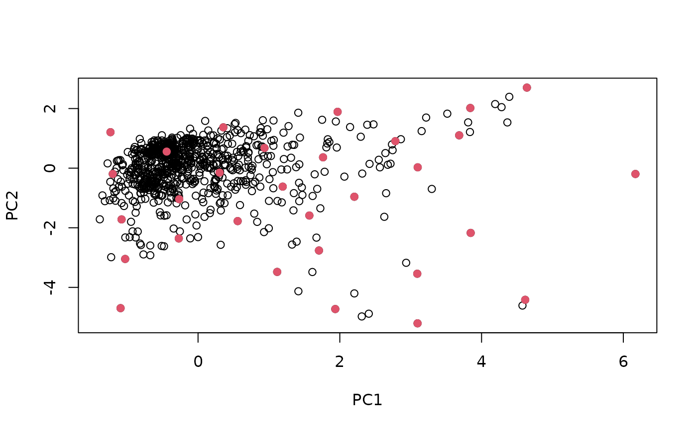
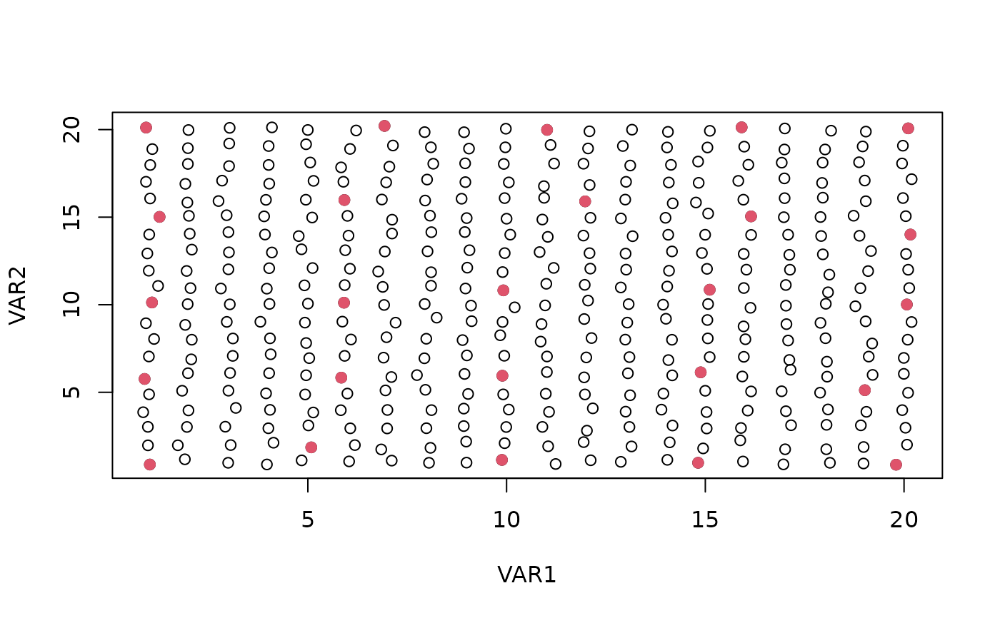

Select calibration samples from a large multivariate data using the Kennard-Stone algorithm
kenStone(X, k, metric = "mahal", pc, group,
.center = TRUE, .scale = FALSE, init = NULL)a numeric matrix.
number of calibration samples to be selected.
distance metric to be used: 'euclid' (Euclidean distance) or 'mahal' (Mahalanobis distance, default).
optional. If not specified, distance are computed in the Euclidean
space. Alternatively, distance are computed
in the principal component score space and pc is the number of principal
components retained.
If pc < 1, the number of principal components kept corresponds to the
number of components explaining at least (pc * 100) percent of the total
variance.
An optional factor (or vector that can be coerced to a factor
by as.factor) of length equal to nrow(X), giving the identifier
of related observations (e.g. samples of the same batch of measurements,
samples of the same origin, or of the same soil profile). Note that by using
this option in some cases, the number of samples retrieved is not exactly the
one specified in k as it will depend on the groups. See details.
logical value indicating whether the input matrix should be
centered before Principal Component Analysis. Default set to TRUE.
logical value indicating whether the input matrix should be
scaled before Principal Component
Analysis. Default set to FALSE.
(optional) a vector of integers indicating the indices of the
observations/rows that are to be used as observations that must be included
at the first iteration of the search process. Default is NULL, i.e. no
fixed initialization. The function will take by default the two most distant
observations. If the group argument is used, then all the observations
in the groups covered by the init observations will be also included
in the init subset.
a list with the following components:
model: numeric vector giving the row indices of the input data
selected for calibration
test: numeric vector giving the row indices of the remaining
observations
pc: if the pc argument is specified, a numeric matrix of the
scaled pc scores
The Kennard–Stone algorithm allows to select samples with a uniform distribution over the predictor space (Kennard and Stone, 1969). It starts by selecting the pair of points that are the farthest apart. They are assigned to the calibration set and removed from the list of points. Then, the procedure assigns remaining points to the calibration set by computing the distance between each unassigned points \(i_0\) and selected points \(i\) and finding the point for which:
\[d_{selected} = \max\limits_{i_0}(\min\limits_{i}(d_{i,i_{0}}))\]
This essentially selects point \(i_0\) which is the farthest apart from its closest neighbors \(i\) in the calibration set. The algorithm uses the Euclidean distance to select the points. However, the Mahalanobis distance can also be used. This can be achieved by performing a PCA on the input data and computing the Euclidean distance on the truncated score matrix according to the following definition of the Mahalanobis \(H\) distance:
\[H_{ij}^2 = \sum_{a=1}^A (\hat t_{ia} - \hat t_{ja})^{2} / \hat \lambda_a\]
where \(\hat t_{ia}\) is the \(a^{th}\) principal component score of point \(i\), \(\hat t_{ja}\) is the corresponding value for point \(j\), \(\hat \lambda_a\) is the eigenvalue of principal component \(a\) and \(A\) is the number of principal components included in the computation.
When the group argument is used, the sampling is conducted in such a
way that at each iteration, when a single sample is selected, this sample
along with all the samples that belong to its group, are assigned to the
final calibration set. In this respect, at each iteration, the algorithm
will select one sample (in case that sample is the only one in that group)
or more to the calibration set. This also implies that the argument k
passed to the function will not necessary reflect the exact number of samples
selected. For example, if k = 2 and if the first sample identified
belongs to with group of 5 samples and the second one belongs to a group with
10 samples, then, the total amount of samples retrieved by the
function will be 15.
Kennard, R.W., and Stone, L.A., 1969. Computer aided design of experiments. Technometrics 11, 137-148.
data(NIRsoil)
sel <- kenStone(NIRsoil$spc, k = 30, pc = .99)
plot(sel$pc[, 1:2], xlab = "PC1", ylab = "PC2")
# points selected for calibration
points(sel$pc[sel$model, 1:2], pch = 19, col = 2)

# Test on artificial data
X <- expand.grid(1:20, 1:20) + rnorm(1e5, 0, .1)
plot(X, xlab = "VAR1", ylab = "VAR2")
sel <- kenStone(X, k = 25, metric = "euclid")
points(X[sel$model, ], pch = 19, col = 2)

# Using the group argument
library(prospectr)
# create groups
set.seed(1)
my_groups <- sample(1:275, nrow(NIRsoil$spc), replace = TRUE)
my_groups <- as.factor(my_groups)
# check the group size
table(my_groups)
#> my_groups
#> 1 2 3 4 5 6 7 8 9 10 11 12 13 14 15 16 17 18 19 20
#> 5 3 4 2 4 2 4 4 2 1 3 1 7 5 1 2 2 1 3 3
#> 21 22 23 24 25 26 27 28 29 30 31 32 33 34 35 36 37 38 39 40
#> 2 2 2 2 4 1 5 2 4 1 6 3 3 1 4 4 2 1 4 5
#> 41 42 43 44 45 46 47 48 49 50 51 52 53 54 55 56 57 58 59 60
#> 6 5 2 4 5 1 1 6 2 1 7 3 2 3 4 7 2 6 1 4
#> 61 62 63 64 65 66 67 68 69 70 71 72 73 74 75 77 78 79 80 81
#> 7 5 2 4 6 1 1 1 2 4 3 2 4 1 4 5 4 4 1 3
#> 82 83 84 85 86 87 88 89 90 91 92 93 94 95 96 97 98 99 100 101
#> 1 3 6 5 5 3 2 7 1 2 3 1 3 1 1 3 2 3 1 2
#> 102 103 104 105 106 107 108 109 110 111 112 113 114 115 116 117 118 119 120 121
#> 3 3 5 7 1 3 5 1 5 4 5 2 3 4 7 4 6 3 2 7
#> 122 123 124 125 126 127 128 129 130 131 132 133 134 135 136 137 138 139 140 141
#> 6 3 3 3 2 4 3 6 6 4 6 7 2 2 1 3 4 2 3 5
#> 142 143 144 145 146 147 148 149 150 151 152 153 156 157 158 159 160 161 162 163
#> 1 1 2 2 4 1 4 3 3 3 1 4 1 2 2 3 4 2 4 3
#> 164 165 166 167 168 169 170 171 172 173 174 175 176 177 179 180 181 182 183 184
#> 5 2 3 3 2 2 3 1 2 1 4 2 4 4 2 2 2 3 4 1
#> 185 186 187 189 190 191 192 193 194 197 198 199 200 201 202 203 204 205 206 207
#> 3 3 1 2 4 1 4 4 3 3 4 2 1 2 1 3 1 4 4 2
#> 208 209 210 211 212 213 214 215 216 217 218 219 220 221 222 223 224 225 226 228
#> 3 3 1 5 3 6 3 4 1 7 6 5 2 4 2 3 2 2 2 1
#> 229 230 231 232 233 234 235 236 237 238 239 240 241 242 243 244 245 246 247 248
#> 5 2 4 5 3 5 2 2 4 4 2 4 3 3 3 2 2 1 6 4
#> 249 250 251 252 253 254 255 256 257 258 259 260 261 262 263 264 265 266 267 268
#> 3 5 4 3 1 2 5 4 1 3 1 3 1 2 3 3 3 3 4 7
#> 269 270 271 272 273 274 275
#> 1 3 6 1 3 1 1
results_group <- kenStone(X = NIRsoil$spc, k = 2, pc = 3, group = my_groups)
#> Samples selected: 7 from 2 groups
#>
# as the first two samples selected belong to groups
# which have in total more than 2 samples (k).
table(factor(my_groups[results_group$model]))
#>
#> 213 272
#> 6 1